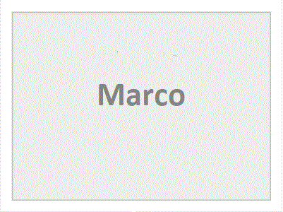

Patrimonio de la Humanidad o Patrimonio Mundial es el título conferido por la Unesco a sitios específicos del planeta (sean bosque, montaña, lago, cueva, desierto, edificación, complejo arquitectónico, ruta cultural, paisaje cultural o ciudad) que han sido propuestos y confirmados para su inclusión en la lista mantenida por el Programa Patrimonio de la Humanidad. El objetivo del programa es catalogar, preservar y dar a conocer sitios de importancia cultural o natural excepcional para la herencia común de la humanidad.
